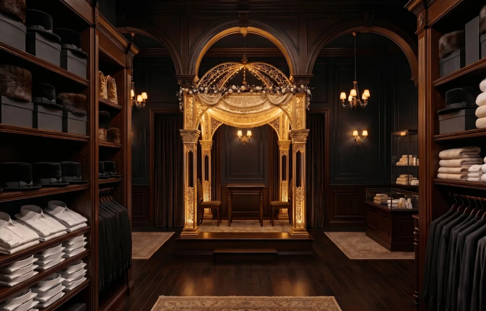

אלה כל התמונות שמופיעות במערכת הניהול של צדקת רבי שמעון: 17 תמונות של חפצים ומקומות, בלי אנשים. הדף נועד לבדיקה ולאישור של סינון התמונות (נטפרי). תמונה שאושרה כאן מוצגת גם בתוך המערכת.

חופה מקושטת באור זהובקופת צדקה עם מטבעות זהבערימות מטבעות זהבסטנדר עם ספר פתוח